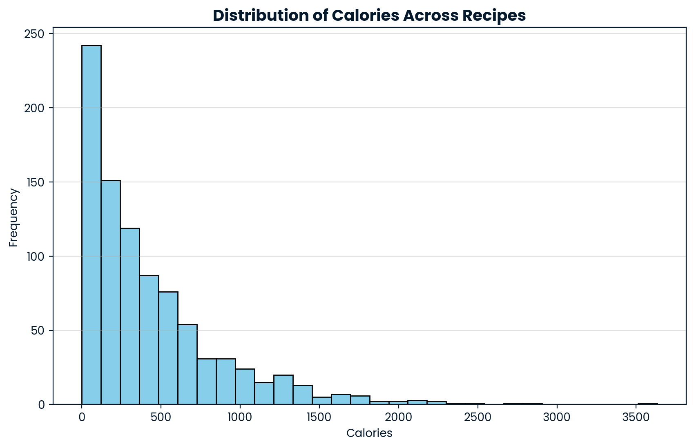
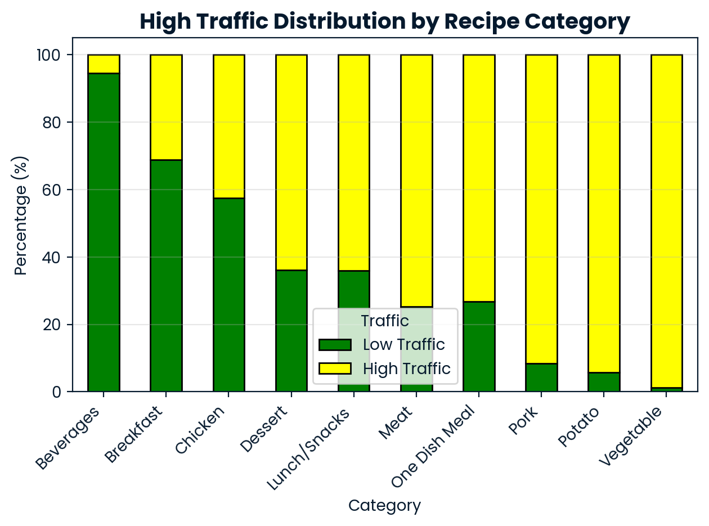
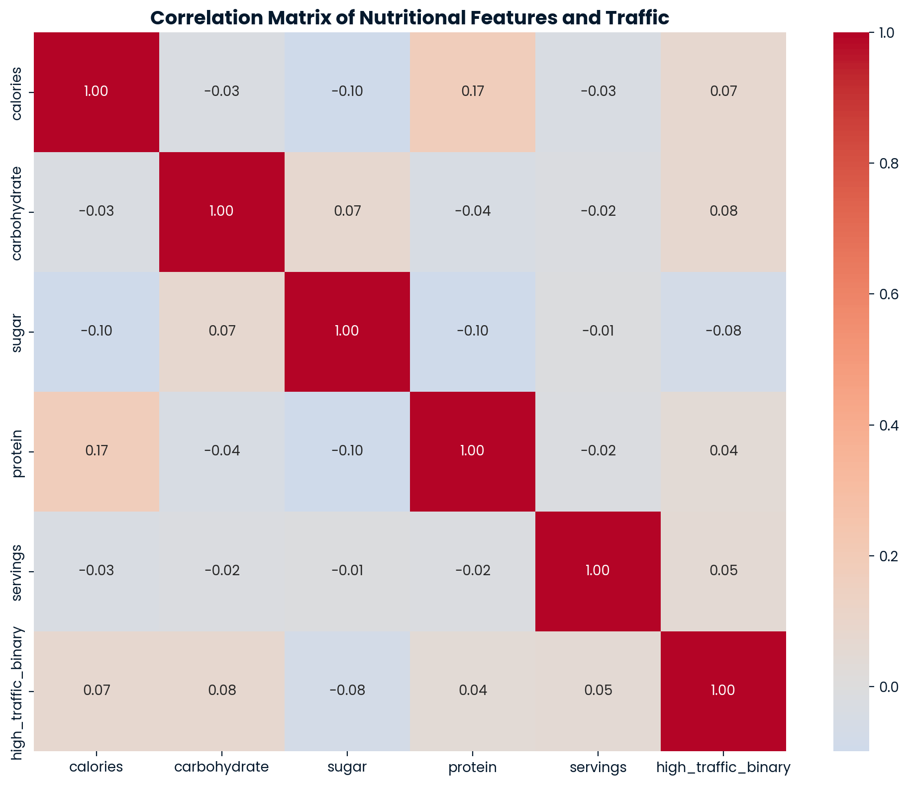
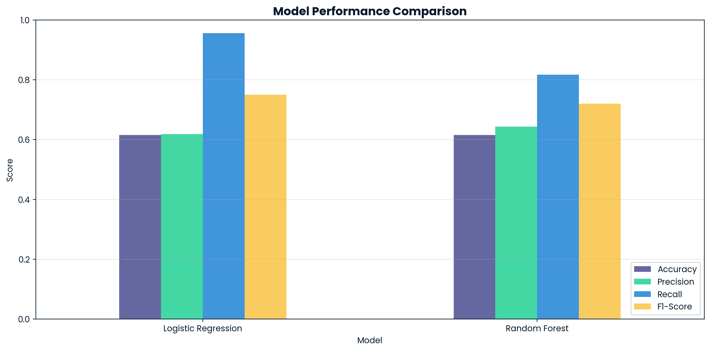

All Projects
Machine learning models, deep learning systems, and data-driven solutions built from real datasets.
Project Showcases
Each project includes full implementation on DataCamp DataLab — click any card to explore the notebook.
Data Visualizations
Key charts from the DataCamp Professional Data Scientist Exam — Recipe Site Traffic Analysis — built with Matplotlib & Seaborn. Click any chart to view full-size.

Distribution of Calories Across Recipes
Right-skewed histogram showing most recipes cluster under 500 kcal, with notable outliers above 2,000.

High Traffic Distribution by Category
Beverages & Breakfast dominate high-traffic outcomes; Pork & Potato recipes skew low-traffic.

Correlation Matrix — Nutritional Features
Seaborn heatmap confirms near-zero correlation between nutritional values and traffic — category is the dominant signal.

Model Performance Comparison
Logistic Regression achieves 96% Recall vs Random Forest's 81%, making it the superior model for the business goal of minimising missed high-traffic recipes.
GitHub Repositories
Open-source work and personal experiments.